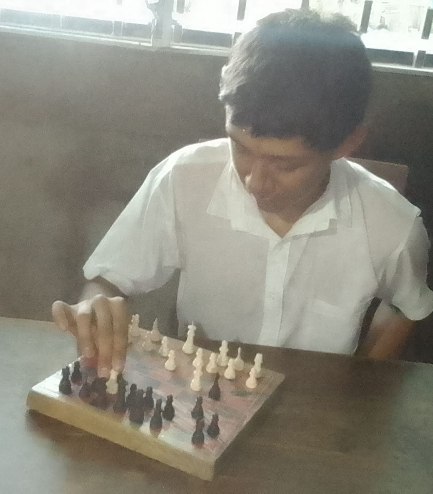
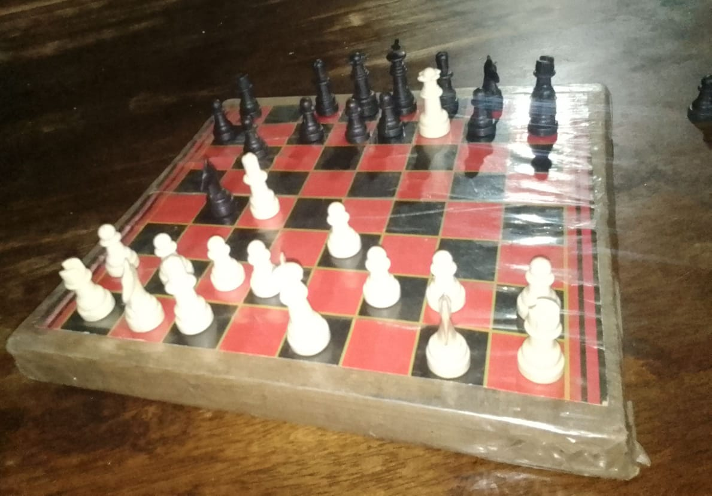

Josué Hernández
¿Cómo nació mi amor por el ajedrez?
Mi pasión por el juego del ajedrez nació hace 7 años, ya que a esa edad conocí el juego. Mi instructor fue mi papá, el me enseño todos los movimientos y reglas que existen en el ajedrez. A partir de allí, he jugado ajedrez y se ha convertido en mi juego de batalla favorito.
¿Cómo me he desarrollado en el ajedrez?
A lo largo de estos 7 años que llevo jugando al ajedrez, he tenido muchas partidas interesantes. Entre estas, le he logrado ganar a mi papá solo dos veces (y sí que fue milagro ganar), he tenido partidas que han durado más de una hora, y he ganado muchas de esas partidas.
¿En qué consiste el juego?
El ajedrez es un juego de estrategia para dos jugadores que se juega sobre un tablero de 64 casillas (8×8), alternando colores claros y oscuros. El objetivo principal es dar jaque mate al rey del oponente, lo que significa atacarlo de manera que no pueda escapar.
Las piezas por jugador (piezas blancas y negras) son:
1 rey, 1 dama, 2 torres, 2 alfiles, 2 caballos, 8 peones.
Mi jugada favorita
Mi jugada favorita es conocida como la jugada del pastor. Es un mate rápido y fácil de aplicar a jugadores principiantes. Consta de solo 4 movimientos usando la Reina y un arfil, rodeando al Rey sin dejarle movimiento.
Dato Curioso
Aunque no lo crean, el ajedrez es considerado un deporte. El Comité Olímpico Internacional lo reconoce como tal desde 1999. Además, tiene su propia federación internacional, la FIDE.



